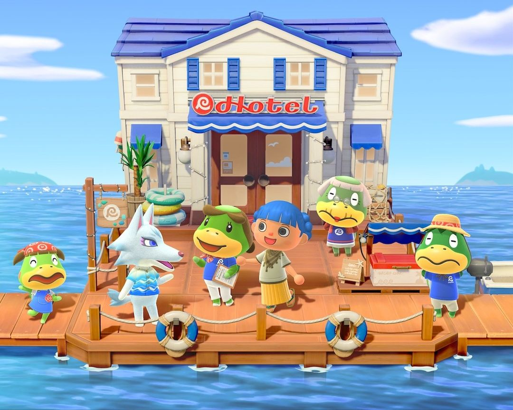
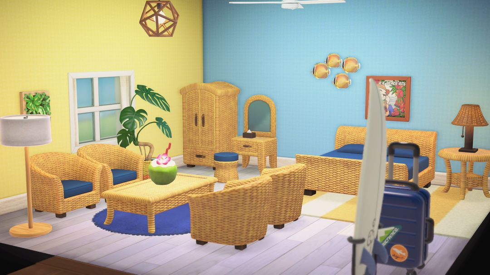
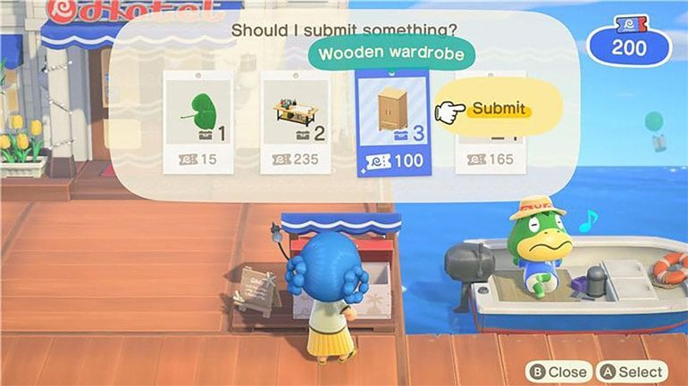
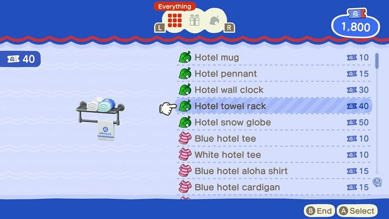

3.0 度假酒店：旅馆券怎么赚、拿去换什么
解锁条件、布置客房、纪念品店和 VIP 客房
3.0 免费更新在码头边加了一座度假酒店，由航平一家经营。游戏中文版里它叫「旅馆」，下面都用这个叫法。玩法很像「快乐家乐园」：帮来住的客人布置房间，换来旅馆券，再拿券去纪念品店挑只有这里才买得到的家具和衣服。
旅馆券只在这家纪念品店能花，铃钱在这里不管用，所以每天能赚多少券，基本决定了你多快能把想要的东西搬回家。整套玩法里最要紧的一步是尽早把 8 间普通客房布置完：VIP 客房、第二趟船、商店上新都卡在这一步后面。下面按解锁、布置、赚券、花券的顺序往下说。

码头上的旅馆，航平一家都在门口（图：任天堂）
01怎么解锁，找谁
旅馆要同时满足三个条件才会出现：岛屿评价到 3 星、K.K. 已经来岛上开过演唱会、博物馆已经盖好。三样凑齐后码头扩建，旅馆就出现了。老玩家要是更新时已经满足这三条，码头直接就是扩建好的样子。
第一次过去，狸克会请你去前台帮忙布置客房。第一间固定是「海边房间」，布置好的当天就有游客住进来。之后再找狸克，可以办一场落成仪式。
旅馆里常驻的是航平一家，各管一摊，办什么事找谁可以对着下表：
| 人物 | 在哪、管什么 |
| 航平 | 老板，平时在旅馆外的船上 |
| 沽玉 | 前台，布置客房找她 |
| 阿玉婆婆 | 纪念品店 |
| 沽沽 | 大厅，晚上 9 点后就不在了 |
02布置客房
楼上一共有 8 间普通客房。到前台找沽玉接活，每天最多布置 2 间，每间 200 旅馆券。照这个速度，每天两间不落下，4 天就能把 8 间全部做完。
第一间固定是海边房间，从第二间起，沽玉每次会给出两个主题让你二选一。普通客房一共 15 种主题：
海边、和风、摩登、自然风、乡村、儿童、梦幻可爱、高层建筑、餐馆、小木屋、复古和风、东方风、冰块、华丽、古董。

布置好的「海边房间」（图：任天堂）
布置完记得用手机里的相机拍一张，照片会挂到楼层图上，旁边写着设计者和住客的名字。买了「快乐家乐园」、而且已经在那边解锁过的功能，比如隔断墙、调灯光、改房间大小，在这里布置时也能照样用。
房间布置好以后，每天都会有游客住进来，你可以进去跟他们聊聊天。8 间都住满的时候，同一种性格的游客只会来一位。
03旅馆券怎么赚
纪念品店只收旅馆券，铃钱在这里买不了东西，所以券得自己一点点攒。能赚券的路子有下面几种：
| 做法 | 旅馆券 |
| 布置普通客房（每天最多 2 间） | 200 |
| 布置 VIP 客房（每天 1 间） | 200 |
| 重新布置做过的客房（每天 1 次） | 200 |
| 把岛上发愁的游客带去旅馆 | 50 |
| 再给这位游客布置 VIP 客房 | 300 |
| DIY 收集箱的委托 | 看委托 |
表里后面三行，要等你布置过第一间 VIP 客房才会开放。普通客房 8 间做完以后就没有新房间可接了，那之后每天稳定进账的是 VIP 客房、重新布置和收集箱的委托。
DIY 收集箱
码头上摆着一个收集箱，同时挂着 4 个委托，每个都写清楚要做什么东西、要交几个、能换多少券。交完一个就补上一个新的，每周一整批换掉，没交的委托就作废了。交委托除了拿券，还会涨旅馆的名气，后面老游戏机上架就要看名气。

DIY 收集箱：每个委托标着要交什么、交几个、给多少券（英文版画面）（图：任天堂）
小提示在自己家里的工作台做 DIY，能直接调用收纳里的材料，一次最多做 10 个。委托动不动要好几个同样的东西，回家一口气做齐再拿去交，省得来回跑。
04纪念品店买什么
纪念品店归阿玉婆婆管，找她买东西有两种买法。
一种是买店里摆着的。货架上的东西每天换两件，比目录便宜 3 成，付了券当场就能拿走。
另一种是翻目录订。目录里东西齐全，但是按原价算，订了第二天才寄到。
所以每天路过可以先瞄一眼货架，碰上想要的就趁便宜收下；店里没摆出来的，再从目录里订。
大理石、现代和风、钢丝这几个系列只有这里卖。另外还有旅馆马克杯、三角旗、下雪水晶球、壁挂钟，以及印着旅馆标志的 T 恤、夏威夷衬衫、雨伞等等。

纪念品店目录：旅馆马克杯、三角旗、T 恤等，右边是要几张旅馆券（英文版画面）（图：任天堂）
几样常见东西的目录价如下，大件家具动辄几百券，得攒上一阵：
| 东西 | 目录价（旅馆券） |
| 大理石壁炉 | 500 |
| 大理石洗脸台 | 450 |
| 大理石桌 | 300 |
| 现代和风床铺 | 250 |
| 猫猫玩偶 | 120 |
| 旅馆马克杯 | 10 |
目录不是一开始就全的。布置满 4 间、满 8 间时，目录会各添一批新货，有时要隔一天才上架，上新了目录上会亮红点。
最后一批是任天堂的老游戏机：Family Computer、Game Boy、Super Famicom 等每台 500 券，Love Tester、Ultra Hand 这类老玩具 200 券，Nintendo Switch 2 是 222 券。这批要等你布置过第一间 VIP 客房、旅馆名气也攒够了才会上架。名气主要靠布置 VIP 客房和交 DIY 委托往上涨，想早点见到这批货，这两件事就别断。
05VIP 客房和 amiibo 客人
8 间普通客房全部布置完的第二天，VIP 客房就开放了。VIP 的主题一共 45 种，普通客房那 15 种都能选，另外还有 30 种 VIP 专属。
VIP 客房要先邀请一位客人才能动手布置。客人只住一晚，第二天退房，房间也随之清空，所以每天都能重新来一间，每天 1 间，每间 200 旅馆券。布置时按左摇杆，可以让客人现身或者隐藏起来，摆家具时不挡视线。
布置完第一间 VIP，还会多出这些
第一间 VIP 客房做完，旅馆会一下子多出好几样玩法：
· 前台多了一台 amiibo 读写器，每天能刷 amiibo 从岛外请一位客人来住 VIP。
· 做过的普通客房可以重新布置，每天 1 次，主题能换成 15 种里的任意一种，也可以干脆不要主题。
· 航平的船每天能多坐一趟，第二趟收 100 旅馆券。
· 岛上会冒出找不到住处的游客，把他们带去旅馆能领到券。
注意住在你岛上的岛民、正在露营的访客请不来；狸克、西施惠、傅达、豆狸、粒狸、麻儿、绢儿、陆德里、莫里、电源叔叔和航平一家也请不来。骆岚、俞司廷这类会上岛的访客，当天正好在你岛上的话也请不来，换一天再刷就行。
06几个小技巧
先把 8 间做完。商店上新、VIP 客房、第二趟船都跟着这一步解锁，越早做完，每天能挣的券就越多。前几天每天两间别落下。
打折的每天看，大件慢慢攒。货架上的 7 折货每天换，路过就看一眼。大理石壁炉这类 500 券的大件，攒够了再从目录订。买回来的颜色不合心意，可以去巴猎的岛上找健兆改造。
给大厅的模特搭衣服。在旅馆干活的第二天，沽玉会给你介绍大厅里的两个模特。给它们换上衣服，来住的游客会照着穿，朋友来玩时也能借去穿。搭上去的衣服不会从你的收纳里扣掉，放心挑。
赶在周一前交委托。收集箱每周一整批换新，手头做得出来的委托，周日之前交掉，别让它作废。
动森圈圈 · 小程序和 iOS App 都搜「动森圈圈」